概述
ZooKeeper 是一种分布式协调服务 + 服务注册与发现，用于管理大型主机。在分布式环境中协调和管理服务是一个复杂的过程。ZooKeeper 通过其简单的架构和 API 解决了这个问题。ZooKeeper 允许开发人员专注于核心应用程序逻辑，而不必担心应用程序的分布式特性。
分布式协调服务，首先协调的是什么：
分布式环境中多个进程之间的同步控制，使它们有序的去访问某种临界资源
协调的本质：
分布式锁，碰巧Zookeeper就是实现了分布式锁的服务
Zookeeper
Zookeeper的数据模型
Zookeeper 的数据模型是什么样子呢？它很像数据结构当中的树，也很像文件系统的目录。

树是由节点所组成，Zookeeper 的数据存储也同样是基于节点，这种节点叫做 Znode
但是，不同于树的节点，Znode 的引用方式是路径引用，类似于文件路径：
1 | /动物/猫 |
这样的层级结构，让每一个 Znode 节点拥有唯一的路径，就像命名空间一样对不同信息作出清晰的隔离。
Znode

- data：Znode 存储的数据信息。（最多1MB）
- ACL：记录 Znode 的访问权限，即哪些人或哪些 IP 可以访问本节点。
- stat：包含 Znode 的各种元数据，比如事务 ID、版本号、时间戳、大小等等。
- child：当前节点的子节点引用
这里需要注意一点，Zookeeper 是为读多写少的场景所设计。Znode 并不是用来存储大规模业务数据，而是用于存储少量的状态和配置信息，每个节点的数据最大不能超过 1MB。
读指的是客户端发现服务；写指的是新的服务注册进来。
Znode类型
持久(Persistent)：客户端和服务端断开连接后，创建的节点不删除。
短暂(Ephemeral)：客户端和服务器端断开连接后，创建的节点自己删除。
- 持久化目录节点
- 持久化顺序编号目录节点
- 临时目录节点
- 临时顺序编号目录节点

Zookeeper的事件通知
Zookeeper是怎么实现每当有服务发生变化时，它的客户端是如何得知的？
主要靠Zookeeper的事件通知，Watch ！🔺
首先介绍Zookeeper的基本操作
创建节点
1 | create |
删除节点
1 | delete |
判断节点是否存在
1 | exists |
获得一个节点的数据
1 | getData |
设置一个节点的数据
1 | setData |
获取节点下的所有子节点
1 | getChildren |
这其中，exists，getData，getChildren 属于读操作。Zookeeper 客户端在请求读操作的时候，可以选择是否设置 Watch
Watch
我们可以把 Watch 理解成是注册在特定 Znode 上的触发器。当这个 Znode 发生改变，也就是调用了 create，delete，setData 方法的时候，将会触发 Znode 上注册的对应事件，请求 Watch 的客户端会接收到异步通知。
具体交互过程如下：
- 客户端调用
getData方法，watch参数是true。服务端接到请求，返回节点数据，并且在对应的哈希表里插入被 Watch 的 Znode 路径，以及 Watcher 列表。

- 当被 Watch 的 Znode 已删除，服务端会查找哈希表，找到该 Znode 对应的所有 Watcher，异步通知客户端，并且删除哈希表中对应的 Key-Value。
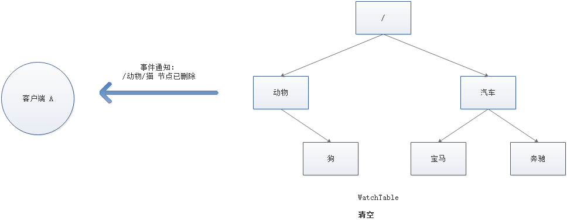
监听器Watch原理🔺

Zookeeper的数据一致性
Zookeeper 身为分布式系统协调服务，如果自身挂了如何处理呢？为了防止单机挂掉的情况，Zookeeper 维护了一个集群(默认/必须是2n+1个节点)。如下图：

而且这里Zookeeper的一致性是单调/顺序一致性。
Zookeeper Service 集群是一主多从结构。
在更新数据时，首先更新到主节点（这里的节点是指服务器，不是 Znode），再同步到从节点。
在读取数据时，直接读取任意从节点。
为了保证主从节点的数据一致性，Zookeeper 采用了 ZAB 协议，这种协议非常类似于一致性算法 Paxos 和 Raft。
ZAB 协议：Zookeeper Automic Broadcast，主要负责广播同步数据以及集群故障修复。
什么是ZAB协议
Zookeeper Atomic Broadcast，有效解决了 Zookeeper 集群崩溃恢复，以及主从同步数据的问题。
ZAB协议中定义的三种节点状态
- Looking ：选举状态。
- Following ：成为Follower状态之前的状态。
- Leading ：成为Leader 状态之前的状态。
最大ZXID
最大 ZXID 也就是节点本地的最新事务编号，包含 epoch 和计数两部分。epoch 是纪元的意思，相当于 Raft 算法选主时候的 term。
ZAB协议实现同步数据🔺
如上面所说，ZAB采用读写分离，读操作可以读任何一台节点，但是写操作只会写入到Leader节点，然后在同步给其他角色。
Broadcast
ZAB 的数据写入涉及到 Broadcast 阶段，简单来说，就是 Zookeeper 常规情况下更新数据的时候，由 Leader 广播到所有的 Follower。其过程如下：
- 客户端发出写入数据请求给任意 Follower。
- Follower 把写入数据请求转发给 Leader。
- Leader 采用二阶段提交方式，先发送 Propose 广播（准备insert数据）给 Follower。
- Follower 接到 Propose 消息，写入日志成功后（事务日志），返回 ACK 消息给 Leader。
- Leader 接到半数以上ACK消息，返回成功给客户端，并且广播 Commit （提交）请求给 Follower，Follower开始执行写操作
- 然后Follower通知Client数据写成功了，这时可以认为整个写操作成功

ZAB 协议既不是强一致性，也不是弱一致性，而是处于两者之间的单调一致性（顺序一致性）。它依靠事务 ID 和版本号，保证了数据的更新和读取是有序的

ZAB实现集群故障回复🔺
ZAB实现崩溃回复的几个前提：主节点挂掉| 服务器刚启动时| 集群中半数以上的Follower不能与Leader正常通信。
ZAB 的崩溃恢复分成三个阶段：
- Leader election
- Discovery
- Synchronization
Leader election
选举阶段有服务器启动时选举、崩溃期间选举。
崩溃期间的选举阶段
选举阶段，此时集群中的节点处于 Looking 状态。它们会各自向其他节点发起投票，投票当中包含自己的服务器 ID 和最新事务 ID（ZXID）。
- 变更状态。Leader挂后，余下的非Leader服务器都会将自己的服务器状态变更为LOOKING，然后开始进入Leader选举过程。
- 每个Server会发出一个投票。在运行期间，每个服务器上的ZXID可能不同，此时假定Server1的ZXID为123，Server3的ZXID为122；在第一轮投票中，Server1和Server3都会投自己，每次投票会包含所推举的服务器的myid和ZXID，使用(myid, ZXID)来表示，产生投票(1, 123)，(3, 122)，然后各自将投票发送给集群中所有机器。
- 接受来自各个服务器的投票。集群的每个服务器收到投票后，首先判断该投票的有效性，如检查是否是本轮投票、是否来自LOOKING状态的服务器。
- 处理投票。针对每一个投票，服务器都需要将别人的投票和自己的投票进行PK，PK规则如下
- 优先检查ZXID。ZXID比较大的服务器优先作为Leader。
- 如果ZXID相同，那么就比较myid。myid较大的服务器作为Leader服务器。
- 统计投票。每次投票后，服务器都会统计投票信息，判断是否已经有过半机器接受到相同的投票信息，对于Server1、Server2而言，都统计出集群中已经有两台机器接受了(2, 0)的投票信息，此时便认为已经选出了Leader。
- 改变服务器状态。一旦确定了Leader，每个服务器就会更新自己的状态，如果是Follower，那么就变更为FOLLOWING，如果是Leader，就变更为LEADING。
这里我们描述一个过程
我们假设有五个节点的Zookeeper集群，其中第三个节点为Leader但是它挂掉了。我们分别假设它的myid和zxid为：(1, 12)、(2, 10)、(3, 13)、(4, 11)、(5, 10)
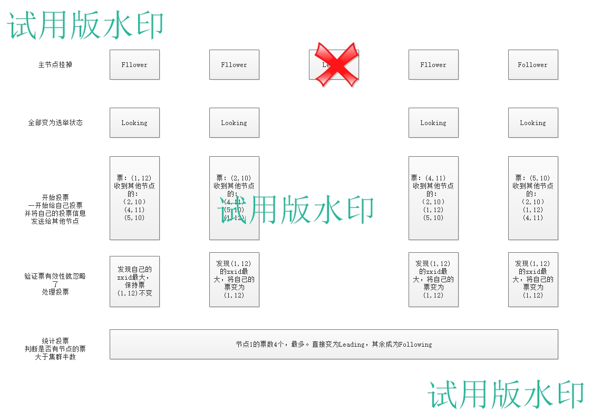
Discovery
发现阶段，用于在从节点中发现最新的 ZXID 和事务日志。或许有人会问：既然 Leader 被选为主节点，已经是集群里数据最新的了，为什么还要从节点中寻找最新事务呢？
这是为了防止某些意外情况，比如因网络原因在上一阶段产生多个 Leader 的情况。（网络是不可靠的）
这个阶段能接触多Leading问题
所以这一阶段，Leader 集思广益，接收所有 Follower 发来各自的最新 epoch 值。Leader 从中选出最大的 epoch，基于此值加 1，生成新的 epoch 分发给各个 Follower。
各个 Follower 收到全新的 epoch 后，返回 ACK 给 Leader，带上各自最大的 ZXID 和历史事务日志。Leader 选出最大的 ZXID，并更新自身历史日志。
流程如下：
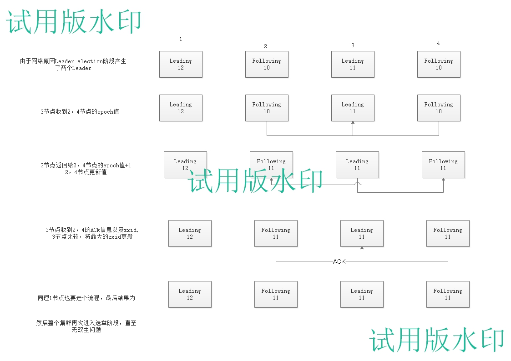
Synchronization
同步阶段，把 Leader 刚才收集得到的最新历史事务日志，同步给集群中所有的 Follower。只有当半数 Follower 同步成功，这个准 Leader 才能成为正式的 Leader。
自此，故障恢复正式完成。
初次开启Zookeeper集群的选举机制
半数机制：集群中半数以上机器存活，集群可用。所以Zookeeper适合安装奇数台服务器。
Zookeeper虽然在配置文件中并没有指定Master和Slave。但是，Zookeeper工作时，是有一个节点为Leader，其他则为Follower，Leader是通过内部的选举机制临时产生的。
假设有五台服务器组成的Zookeeper集群，它们的id从1-5，同时它们都是最新启动的，也就是没有历史数据，在存放数据量这一点上，都是一样的。假设这些服务器依序启动，来看看会发生什么，如图所示

服务器1启动，发起一次选举。服务器1投自己一票。此时服务器1票数一票，不够半数以上（3票），选举无法完成，服务器1状态保持为LOOKING；
服务器2启动，再发起一次选举。服务器1和2分别投自己一票并交换选票信息：此时服务器1发现服务器2的ID比自己目前投票推举的（服务器1）大，更改选票为推举服务器2。此时服务器1票数0票，服务器2票数2票，没有半数以上结果，选举无法完成，服务器1，2状态保持LOOKING
服务器3启动，发起一次选举。此时服务器1和2都会更改选票为服务器3。此次投票结果：服务器1为0票，服务器2为0票，服务器3为3票。此时服务器3的票数已经超过半数，服务器3当选Leader。服务器1，2更改状态为FOLLOWING，服务器3更改状态为LEADING；
服务器4启动，发起一次选举。此时服务器1，2，3已经不是LOOKING状态，不会更改选票信息。交换选票信息结果：服务器3为3票，服务器4为1票。此时服务器4服从多数，更改选票信息为服务器3，并更改状态为FOLLOWING；
服务器5启动，同4一样当小弟。
Zookeeper实现分布式锁
Zookeeper是如何实现分布式锁的，怎么实现它的三大操作，以及如何解决三大问题
操作：加锁、解锁、锁超时
问题：非原子性操作、误删锁、出现并发的可能性
说到如何实现分布式锁，就不得不提它的Znode的四种类型
持久节点
默认的节点类型。创建节点的客户端与 Zookeeper 断开连接后，该节点依旧存在。
持久节点顺序节点（PERSISTENT_SEQUENTIAL）
所谓顺序节点，就是在创建节点时，Zookeeper 根据创建的时间顺序给该节点名称进行编号
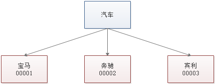
临时节点（EPHEMERAL）
和持久节点相反，当创建节点的客户端与 Zookeeper 断开连接后，临时节点会被删除：
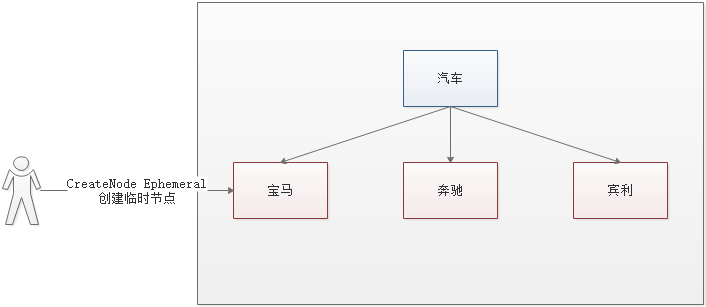
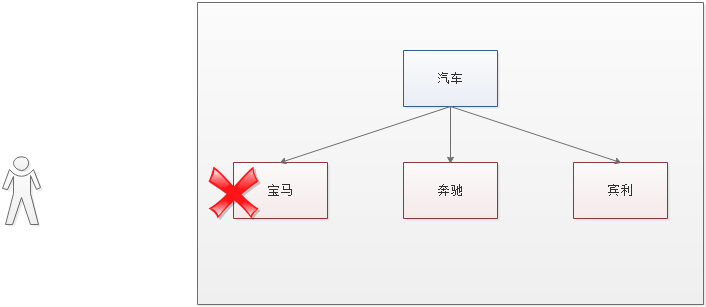
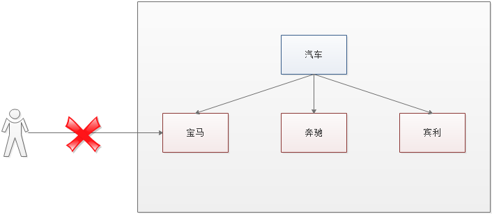
临时顺序节点（EPHEMERAL_SEQUENTIAL）
顾名思义，临时顺序节点结合和临时节点和顺序节点的特点：在创建节点时，Zookeeper 根据创建的时间顺序给该节点名称进行编号；当创建节点的客户端与 Zookeeper 断开连接后，临时节点会被删除。
Zookeeper 分布式锁的原理
Zookeeper 分布式锁恰恰应用了临时顺序节点。具体如何实现呢？让我们来看一看详细步骤：
获取锁
首先，在 Zookeeper 当中创建一个持久节点 ParentLock。当第一个客户端想要获得锁时，需要在 ParentLock 这个节点下面创建一个临时顺序节点 Lock1。
之后，Client1 查找 ParentLock 下面所有的临时顺序节点并排序，判断自己所创建的节点 Lock1 是不是顺序最靠前的一个。如果是第一个节点，则成功获得锁。
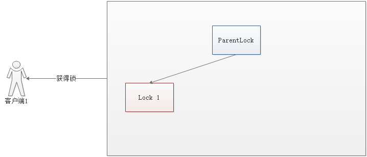
这时候，如果再有一个客户端 Client2 前来获取锁，则在 ParentLock 下载再创建一个临时顺序节点 Lock2。
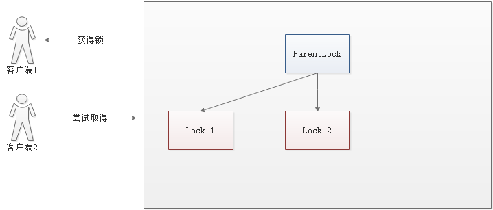
Client2 查找 ParentLock 下面所有的临时顺序节点并排序，判断自己所创建的节点 Lock2 是不是顺序最靠前的一个，结果发现节点 Lock2 并不是最小的。
于是，Client2 向排序仅比它靠前的节点 Lock1 注册 Watcher(只注册比自己小一点的那个锁的Watch)，用于监听 Lock1 节点是否存在。这意味着 Client2 抢锁失败，进入了等待状态。
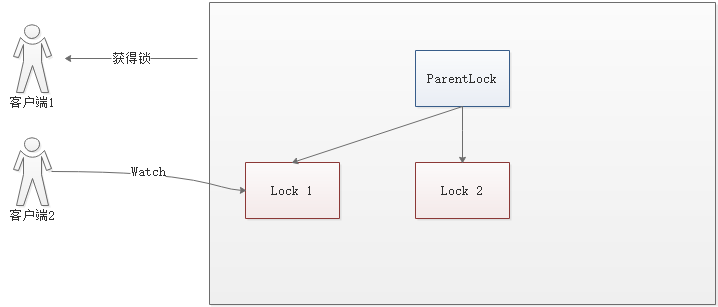
这时候，如果又有一个客户端 Client3 前来获取锁，则在 ParentLock 下载再创建一个临时顺序节点 Lock3

Client3 查找 ParentLock 下面所有的临时顺序节点并排序，判断自己所创建的节点 Lock3 是不是顺序最靠前的一个，结果同样发现节点 Lock3 并不是最小的。
于是，Client3 向排序仅比它靠前的节点 Lock2 注册 Watcher，用于监听 Lock2 节点是否存在。这意味着 Client3 同样抢锁失败，进入了等待状态。
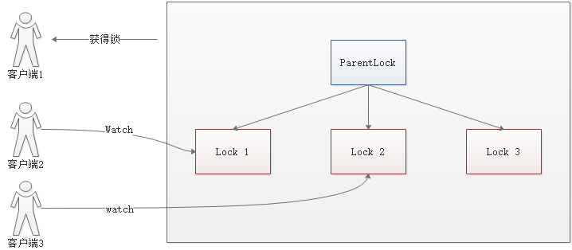
这样一来，Client1 得到了锁，Client2 监听了 Lock1，Client3 监听了 Lock2。这恰恰形成了一个等待队列，
释放锁
释放锁分为两种情况 ：
任务完成，客户端显示释放
当任务完成时，Client1 会显示调用删除节点 Lock1 的指令。
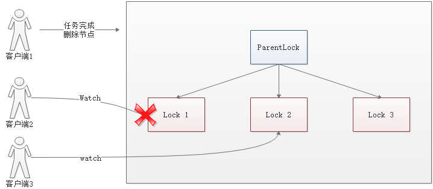
任务执行过程中，客户端崩溃
获得锁的 Client1 在任务执行过程中，如果崩溃，则会断开与 Zookeeper 服务端的链接。根据临时节点的特性，相关联的节点 Lock1 会随之自动删除。
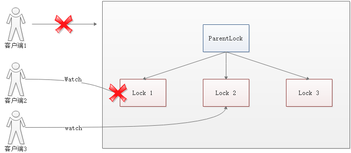
由于 Client2 一直监听着 Lock1 的存在状态，当 Lock1 节点被删除，Client2 会立刻收到通知。这时候 Client2 会再次查询 ParentLock 下面的所有节点，确认自己创建的节点 Lock2 是不是目前最小的节点。如果是最小，则 Client2 顺理成章获得了锁。
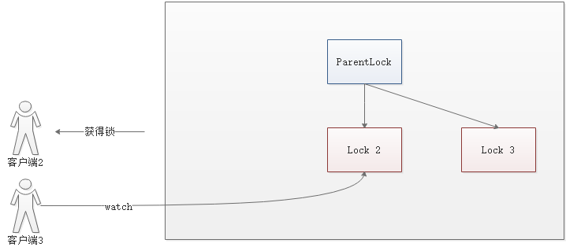
同理，如果 Client2 也因为任务完成或者节点崩溃而删除了节点 Lock2，那么 Client3 就会接到通知。
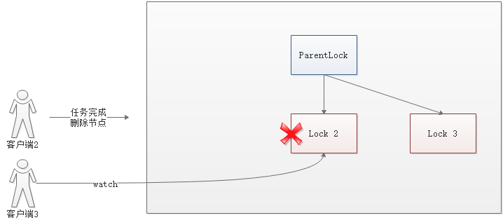
最终，Client3 成功得到了锁。
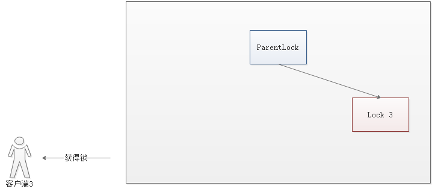
Zookeeper分布式原理会有那三大问题么
原子性问题
原子性问题指的是加锁和锁超时操作要是一个操作，zookeeper的实现是连接上就创建一个临时顺序节点，断开就是释放。所以没有上述问题
误删锁问题
误删锁问题指的是用户1在执行任务中，锁超时时间过了，用户2申请到了锁，这时用户1执行完毕，却删除了用户2的锁。在这里zookeeper不会触发此问题，用户1执行过程中不会解锁，用户2根本申请不到锁，除非用户1主动解锁（执行完成）/用户1挂掉，用户2 才可申请加锁，此时用户1已经自动解锁
存在的并发问题
同上，不可能存在多用户申请到同一个资源的 锁
Zookeeper的应用场景
分布式锁
这是雅虎研究员设计 Zookeeper 的初衷。利用 Zookeeper 的临时顺序节点，可以轻松实现分布式锁。
服务注册与发现
利用 Znode 和 Watcher，可以实现分布式服务的注册和发现。最著名的应用就是阿里的分布式 RPC 框架 Dubbo
共享配置和状态信息
Redis 的分布式解决方案 Codis，就利用了 Zookeeper 来存放数据路由表和 codis-proxy 节点的元信息。同时 codis-config 发起的命令都会通过 ZooKeeper 同步到各个存活的 codis-proxy。
此外，Kafka、HBase、Hadoop，也都依靠Zookeeper同步节点信息，实现高可用。
Zookeeper安装
Zookeeper 部署有三种方式，单机模式、集群模式、伪集群模式，以下采用 Docker 的方式部署
注意： 集群为大于等于3个奇数，如 3、5、7,不宜太多，集群机器多了选举和数据同步耗时长，不稳定。
单机模式
docker-compose.yml
1 | version: '3.1' |
验证测试
交互进入容器
1 | docker exec -it zookeeper_zoo1_1 /bin/bash |
使用客户端连接到服务端
1 | bash-4.3# ./bin/zkCli.sh -server 192.168.75.130:2181 |
使用服务端工具检查服务器状态
1 | bash-4.3# ./bin/zkServer.sh status |
集群模式
准备 3 台 Ubuntu Server 系统，并分别配置 Zookeeper
node1
docker-compose.yml
1 | version: '3.1' |
验证测试
1 | root@UbuntuBase:/usr/local/docker/zookeeper# docker exec -it zookeeper_zoo1_1 /bin/bash |
node2
docker-compose.yml
1 | version: '3.1' |
验证测试
1 | root@UbuntuBase:/usr/local/docker/zookeeper# docker exec -it zookeeper_zoo2_1 /bin/bash |
node3
docker-compose.yml
1 | version: '3.1' |
验证测试
1 | root@UbuntuBase:/usr/local/docker/zookeeper# docker exec -it zookeeper_zoo3_1 /bin/bash |
伪集群模式
docker-compose.yml
1 | version: '3.1' |
验证如上
Zookeeper的配置
Zookeeper的端口
- 2181：客户端连接 Zookeeper 集群使用的监听端口号
- 3888：选举 leader 使用
- 2888：集群内机器通讯使用（Leader 和 Follower 之间数据同步使用的端口号，Leader 监听此端口）
Zookeeper 集群模式配置文件
配置文件路径：/conf/zoo.cfg
1 | clientPort=2181 |
- initLimit：配置 Zookeeper 接受客户端（这里所说的客户端不是用户连接 Zookeeper 服务器的客户端，而是 Zookeeper 服务器集群中连接到 Leader 的 Follower 服务器）初始化连接时最长能忍受多少个心跳时间间隔数。当已经超过 initLimit（默认为 10） 个心跳的时间（也就是 tickTime）长度后 Zookeeper 服务器还没有收到客户端的返回信息，那么表明这个客户端连接失败。总的时间长度就是
5 * 2000 = 10秒 - syncLimit：配置 Leader 与 Follower 之间发送消息，请求和应答时间长度，最长不能超过多少个 tickTime 的时间长度，总的时间长度就是
2 * 2000 = 4秒 - 定时清理（Zookeeper 从 3.4.0 开始提供了自动清理快照和事务日志的功能）以下两个参数配合使用：
- autopurge.purgeInterval：指定了清理频率，单位是小时，需要填写一个 1 或更大的整数，默认是 0，表示不开启自己清理功能。
- autopurge.snapRetainCount：指定了需要保留的文件数目。默认是保留 3 个。
- maxClientCnxns：限制连接到 Zookeeper 的客户端的数量，限制并发连接的数量，它通过 IP 来区分不同的客户端。此配置选项可以用来阻止某些类别的 Dos 攻击。将它设置为 0 或者忽略而不进行设置将会取消对并发连接的限制。
- server.A=B：C：D：其中 A 是一个数字，表示这个是第几号服务器。B 是这个服务器的 IP 地址。C 表示的是这个服务器与集群中的 Leader 服务器交换信息的端口(
2888)；D 表示的是万一集群中的 Leader 服务器挂了，需要一个端口来重新进行选举，选出一个新的 Leader，而这个端口就是用来执行选举时服务器相互通信的端口(3888)。如果是伪集群的配置方式，由于 B 都是一样，所以不同的 Zookeeper 实例通信端口号不能一样，所以要给它们分配不同的端口号。
注意： server.A 中的 A 是在 dataDir 配置的目录中创建一个名为 myid 的文件里的值（如：1）
Zookeeper常用命令
客户端
| 命令基本语法 | 功能描述 |
|---|---|
help |
显示所有操作命令 |
ls path [watch] |
使用 ls 命令来查看当前znode中所包含的内容 |
ls2 path [watch] |
查看当前节点数据并能看到更新次数等数据 |
create |
普通创建 -s 含有序列 -e 临时（重启或者超时消失） |
get path [watch] |
获得节点的值 |
set |
设置节点的具体值 |
stat |
查看节点状态 |
delete |
删除节点 |
rmr |
递归删除节点 |
加上watch可选参数后，能监听节点数据变化
get path watch：监听节点数据变化ls path watch：监听子节点增减变化
转载
本次文章源于
并加入了个人理解。